- គណនាបរិមាត្រចតុកោណកែង ការេ ត្រីកោណ
- កំណត់សញ្ញាណនៃផ្ទៃក្រឡា
- រកផ្ទៃក្រឡានៃចតុកោណកែង ការេនិងត្រីកោណ
- ដោះស្រាយចំណោទ ។
1. សញ្ញាណបរិមាត្រ
1.1 សញ្ញាណទូទៅនៃបរិមាត្រ
រកប្រវែងខ្សែរុំកាច់នៃរូបខាងស្ដាំ ។
\(\displaystyle L = AB + BC + CD + DE\)
ហៅថាប្រវែងខ្សែរុំកាច់ ។
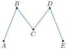
រកប្រវែងជុំវិញពហុកោណ \(\displaystyle ABCDEFGH\) ។
\(\displaystyle P = AB + BC + CD + DE + EF + FG + GH + HA\)
ហៅថាបរិមាត្រពហុកោណ \(\displaystyle ABCDEFGH\) ។
| ជាទូទៅ បរិមាត្រនៃពហុកោណគឺជាប្រវែងខ្សែរុំកាច់បិទជិតដែលកំណត់ពហុកោណនោះ ។ |
គណនាបរិមាត្រពហុកោណនៃរូបខាងស្ដាំ ។
បរិមាត្រពហុកោណ :
\(\displaystyle P = 12cm + 7cm + 5cm + 10cm + 14cm + 23cm = 71cm\)
ដូចនេះ បរិមាត្រពហុកោណគឺ \(\displaystyle P = 71cm\) ។
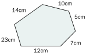
រកបរិមាត្រពហុកោណខាងក្រោម
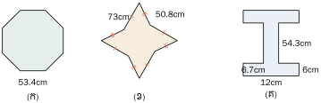
1.2 បរិមាត្រចតុកោណកែង
គណនាបរិមាត្រចតុកោណកែងក្នុង រូបខាងស្ដាំ ។ បរិមាត្រចតុកោណកែងគឺ :
\(\displaystyle P = 73dm + 119dm + 73dm + 119dm = 384dm\) ។
គណនាបរិមាត្រចតុកោណកែងដែល មានវិមាត្រ \(\displaystyle a\) និង \(\displaystyle b\) ។
បរិមាត្រចតុកោណកែង \(\displaystyle ABCD\) គឺ :
\(\displaystyle P = a + b + a + b = 2a + 2b = 2(a + b)\) ។
| រូបមន្ត បរិមាត្រនៃចតុកោណកែងគឺ \(\displaystyle P = 2(a + b)\) ដែល \(\displaystyle a\) ជាប្រវែងទទឹង |
| និង \(\displaystyle b\) ជាប្រវែងបណ្ដោយ ។ |
ចម្ការស្វាយមួយរាងចតុកោណកែងដែលមានបរិមាត្រ \(\displaystyle 424m\) និងទទឹងស្មើ \(\displaystyle 15.50m\) ។ គណនាបណ្ដោយចម្ការស្វាយនោះ ។
បណ្ដោយចម្ការស្វាយ
បរិមាត្រចម្ការស្វាយ \(\displaystyle P = 2(a + b)\) នាំឱ្យ \(\displaystyle b = \frac{P}{2} - a\)
ដោយ \(\displaystyle P = 424m\) , \(\displaystyle a = 15.50m\)
គេបាន \(\displaystyle b = \frac{424}{2} - 15.50 = 196.5\)
ដូចនេះ បណ្ដោយចម្ការស្វាយគឺ \(\displaystyle b = 196.5m\) ។
ដីស្រែមួយមានរាងចតុកោណកែង ដែលមានវិមាត្រស្មើ \(\displaystyle 55cm\) និង \(\displaystyle 107cm\) ។ គណនាបរិមាត្រដីស្រែនោះ ។
1.3 បរិមាត្រការេ
គណនាបរិមាត្រការេដែលមានរង្វាស់ជ្រុងស្មើនឹង \(\displaystyle 27cm\) ។
បរិមាត្រការេគឺ : \(\displaystyle P = 27cm + 27cm + 27cm + 27cm = 4 \times 27cm = 108cm\) ។
គណនាបរិមាត្រការេ តាមរូបខាងស្ដាំ
បរិមាត្រការេ \(\displaystyle P = a + a + a + a = 4a\) ។
| រូបមន្ត បរិមាត្រនៃការេគឺ \(\displaystyle P = 4a\) ដែល \(\displaystyle a\) ជាជ្រុង ។ |
ស្រះចិញ្ចឹមត្រីមួយមានរាងការេ ដែលមានរង្វាស់ជ្រុងស្មើនឹង \(\displaystyle 18m\) ។ គណនាបរិមាត្រស្រះនោះ ។
បរិមាត្រស្រះ \(\displaystyle P = 4 \times 18m = 72m\)
ដូចនេះ \(\displaystyle P = 72m\) ។
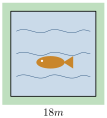
ចម្ការកៅស៊ូមួយមានរាងការេ ។ គេធ្វើរបងព័ទ្ធខ្សែលួស 3 ជុំអស់លួសប្រវែង \(\displaystyle 864m\) ។
- ក. គណនាបរិមាត្រចម្ការកៅស៊ូ
- ខ. គណនាប្រវែងជ្រុងចម្ការកៅស៊ូ ។
- ក. បរិមាត្រចម្ការកៅស៊ូ \(\displaystyle P = \frac{864}{3} = 288m\)
- ខ. ប្រវែងជ្រុងចម្ការកៅស៊ូ \(\displaystyle a = \frac{288m}{4} = 72m\) ។
ដូចនេះ បរិមាត្រចម្ការកៅស៊ូ \(\displaystyle P = 288m\) និងជ្រុងចម្ការកៅស៊ូ \(\displaystyle a = 72m\) ។
សុខាមានក្រដាសមួយសន្លឹកដូចរូបខាងស្ដាំ ។ តើសុខាត្រូវកាត់ក្រដាសតាមរបៀបណាដើម្បីផ្គុំបានជាការេ ? គណនាបរិមាត្រនៃការេដែលផ្គុំបាន ។
1.4 បរិមាត្រត្រីកោណ
គណនាបរិមាត្រត្រីកោណដែលមាន រង្វាស់ជ្រុងដូចក្នុងរូបខាងស្ដាំ ។
ប្រវែងបរិមាត្រត្រីកោណគឺ \(\displaystyle P_{ABC} = 14cm + 12cm + 25cm = 51cm\) ។
គណនាបរិមាត្រត្រីកោណដែលមានរង្វាស់ ជ្រុងដូចខាងស្ដាំ
ប្រវែងបរិមាត្រត្រីកោណ \(\displaystyle P_{ABC} = a + b + c\) ។
| រូបមន្ត បរិមាត្រនៃត្រីកោណដែលមានរង្វាស់ជ្រុង \(\displaystyle a\) , \(\displaystyle b\) , \(\displaystyle c\) គឺ \(\displaystyle P = a + b + c\) ។ |
គណនាបរិមាត្រត្រីកោណសមបាត \(\displaystyle ABC\) ដោយស្គាល់រង្វាស់ជ្រុង \(\displaystyle AB = AC = 27cm\) , \(\displaystyle BC = 21cm\) ។
បរិមាត្រត្រីកោណសមបាត \(\displaystyle ABC\)
\(\displaystyle P = 2 \times AB + BC\)
\(\displaystyle = 2 \times 27cm + 21cm = 75cm\)
ដូចនេះ \(\displaystyle P = 75cm\) ។
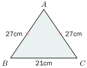
គណនាបរិមាត្រត្រីកោណ \(\displaystyle ABC\) ។
2. ផ្ទៃក្រឡាពហុកោណ
2.1 សញ្ញាណផ្ទៃនិងផ្ទៃក្រឡា
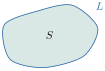
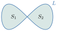
(រូបទី1) និង (រូបទី2) ជាផ្ទៃពីរដែលមានរាងខុសគ្នា តែវាមាន 10 ការ៉ូដូចគ្នា ។
ដូចនេះ គេថាផ្ទៃរូបទី (1) និងផ្ទៃរូបទី (2) មានផ្ទៃក្រឡាស្មើគ្នា ។
បើគេយកការេ (3) ជាឯកតាផ្ទៃ នោះផ្ទៃក្រឡារូបទី (1) រូបទី (2) ស្មើនឹង 10 ឯកតាផ្ទៃ ។
| ជាទូទៅ ផ្ទៃក្រឡាគឺជាចំនួននៃឯកតាដែលនៅក្នុងផ្ទៃ ។ |
2.2 ឯកតាផ្ទៃក្រឡា
បើគេវាស់ជ្រុងនៃបន្ទប់រៀនដោយយកឯកតារង្វាស់ម៉ែត្រ \(\displaystyle (m)\) នោះឯកតាផ្ទៃជា ម៉ែត្រការេ \(\displaystyle (m^2)\) ។ ឯកតាផ្ទៃ មានដូចតារាងខាងក្រោម
| ប្រវែងជ្រុង | \(\displaystyle 1km\) | \(\displaystyle 1hm\) | \(\displaystyle 1dam\) | \(\displaystyle 1m\) | \(\displaystyle 1dm\) | \(\displaystyle 1cm\) | \(\displaystyle 1mm\) |
| ឯកតាផ្ទៃ | \(\displaystyle 1km^2\) | \(\displaystyle 1hm^2\) | \(\displaystyle 1dam^2\) | \(\displaystyle 1m^2\) | \(\displaystyle 1dm^2\) | \(\displaystyle 1cm^2\) | \(\displaystyle 1mm^2\) |
ឯកតាផ្ទៃក្រឡាគឺ ម៉ែត្រការេ \(\displaystyle (m^2)\) និងពហុគុណ អនុពហុគុណ ។
ម៉ែត្រការេ ជាផ្ទៃក្រឡានៃការេដែលមានរង្វាស់ស្មើនឹង \(\displaystyle 1m\) ។
ដើម្បីវាស់ដីស្រែចម្ការ គេនិយមប្រើឯកតារង្វាស់ដីដូចជា : សង់ទីអា (ca) , អា (a) , ហិចតា (ha) ។
\(\displaystyle 1ca = 1m^2\) , \(\displaystyle 1a = 1dam^2 = 100m^2\) , \(\displaystyle 1ha = 1hm^2 = 100dam^2 = 10 000m^2\) ។
បំពេញចន្លោះខាងក្រោម
ក. \(\displaystyle 3m^2 = ......cm^2\) ខ. \(\displaystyle 1a = ......m^2\) គ. \(\displaystyle 500cm^2 = .......m^2\) ។
2.3 ផ្ទៃក្រឡាចតុកោណកែង
គណនាផ្ទៃក្រឡាចតុកោណកែង ខាងស្ដាំ ។ ចតុកោណកែងមានជួរឈរ 4 ការ៉ូនិងជួរ ដេក 7 ការ៉ូ គេបាន
\(\displaystyle S = \underbrace{4+4+4+4+4+4+4}_{7 \text{ តួ}} = 7 \times 4 = 28\)
ដូចនេះ ផ្ទៃក្រឡាចតុកោណកែងគឺ \(\displaystyle S = 28\) ការ៉ូ ។
គណនាផ្ទៃក្រឡាចតុកោណកែង ដែលមានរង្វាស់ជ្រុង \(\displaystyle a = 6cm\) , \(\displaystyle b = 3cm\) ។
ផ្ទៃក្រឡាចតុកោណកែង \(\displaystyle = \underbrace{6+6+6}_{3 \text{ តួ}} = 18\) ការ៉ូ
ឬ \(\displaystyle 3cm \times 6cm = 18cm^2\)
គេបាន \(\displaystyle S = a \times b\)
ដូចនេះ ផ្ទៃក្រឡាចតុកោណកែងគឺ \(\displaystyle S = 18cm^2\) ។
| រូបមន្ត ផ្ទៃក្រឡាចតុកោណកែងគឺ \(\displaystyle S = a \times b\) ឬ \(\displaystyle ទទឹង \times បណ្ដោយ\) ។ |
គណនាផ្ទៃក្រឡាចតុកោណកែង \(\displaystyle ABCD\) ដោយស្គាល់រង្វាស់ជ្រុង \(\displaystyle AB = 130dm\) និង \(\displaystyle AD = 117dm\)
ផ្ទៃក្រឡាចតុកោណកែង \(\displaystyle ABCD\)
\(\displaystyle S = AB \times AD\)
\(\displaystyle = 130dm \times 117dm = 15210dm^2\)
ដូចនេះ \(\displaystyle S = 15210dm^2\) ។
គណនាជ្រុងនៃចតុកោណកែង \(\displaystyle ABDC\) ដោយស្គាល់ \(\displaystyle AB = 207cm\) និង \(\displaystyle S = 14076cm^2\) ។
តាង \(\displaystyle X\) ជាជ្រុងចតុកោណកែង \(\displaystyle ABDC\) ដែលត្រូវរក
\(\displaystyle S = X \times AB \Rightarrow X = \frac{S}{AB} = \frac{14076cm^2}{207cm} = 68cm\) ។
ដូចនេះ រង្វាស់ជ្រុងចតុកោណកែងគឺ \(\displaystyle 68cm\) ។
ចូរបំពេញចន្លោះក្នុងតារាងខាងក្រោម
| ចតុកោណកែង | ជ្រុងទី 1 | ជ្រុងទី 2 | ផ្ទៃក្រឡា | បរិមាត្រ |
| ទី1 | \(\displaystyle 25cm\) | \(\displaystyle ......cm\) | \(\displaystyle 300cm^2\) | \(\displaystyle ......cm\) |
| ទី2 | \(\displaystyle ......dm\) | \(\displaystyle 24dm\) | \(\displaystyle ......dm^2\) | \(\displaystyle 120dm\) |
| ទី3 | \(\displaystyle 10m\) | \(\displaystyle 7m\) | \(\displaystyle 70m^2\) | \(\displaystyle ......m\) |
| ទី4 | \(\displaystyle 1224mm\) | \(\displaystyle 1222mm\) | \(\displaystyle ......mm^2\) | \(\displaystyle ......mm\) |
2.4 ផ្ទៃក្រឡាការេ
គណនាផ្ទៃក្រឡាការេខាងស្ដាំ ។
ការេមាន \(\displaystyle (A)\) មានផ្ទៃក្រឡា \(\displaystyle S_A = 5 \times 5 = 5^2 = 25\)
ដូចនេះ ការេ \(\displaystyle (A)\) មានផ្ទៃក្រឡា \(\displaystyle S_A = 25\) ការ៉ូ ។
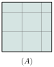
គណនាផ្ទៃក្រឡាការេដោយស្គាល់រង្វាស់ជ្រុង \(\displaystyle a = 6cm\) ។
ផ្ទៃក្រឡាការេ \(\displaystyle = 6 \times 6 = 6^2 = 36\)
\(\displaystyle S = a \times a = a^2\)
ដូចនេះ ផ្ទៃក្រឡាការេគឺ \(\displaystyle S = 36cm^2\)
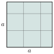
| រូបមន្ត ផ្ទៃក្រឡាការេគឺ \(\displaystyle S = a^2\) ដែល \(\displaystyle a\) ជាជ្រុង ។ |
សុផាតធ្វើដំណើរទៅកម្សាន្តចំការកៅស៊ូដែលមាន រាងជាការេ ពេលទៅដល់គាត់ឃើញគេដាក់ស្លាកដែលមានមាត្រដ្ឋាន \(\displaystyle \frac{1}{100000}\) និងមានបរិមាត្រ \(\displaystyle 2.96cm\) ។
- ក. គណនាផ្ទៃក្រឡាដីពិតរបស់ចំការកៅស៊ូជាហិចតា ។
- ខ. គណនាប្រវែងខ្សែលួស បើគេព័ទ្ធចំការនោះ 6 ជុំ ។
- គ. គណនាតម្លៃខ្សែលួស បើក្នុង \(\displaystyle 1m\) ថ្លៃ 900 ៛ ។
ផ្ទៃក្រឡាដីពិតរបស់ចំការកៅស៊ូជាហិចតា
មាត្រដ្ឋាន \(\displaystyle 1 : 100000\) មានន័យថាប្រវែង \(\displaystyle 1cm\) នៅលើផែនទីតាងឱ្យ \(\displaystyle 100 000cm\) ឬ \(\displaystyle 1000m\) នៅលើផ្ទៃដីពិត ។
បើ \(\displaystyle a\) ជាជ្រុងនៃចំការកៅស៊ូ គេបាន
\(\displaystyle P = 4a = 2.96 \times 1000m = 2960m\)
\(\displaystyle a = \frac{2960m}{4} = 740m\)
- ក. ផ្ទៃក្រឡាចំការកៅស៊ូ \(\displaystyle S = a^2 = (740m)^2 = 547600m^2 = 54.76ha\)
- ខ. រកប្រវែងខ្សែលួស \(\displaystyle L = 2960m \times 6 = 17760m\)
- គ. រកតម្លៃខ្សែលួសទាំងអស់ \(\displaystyle M = 900 \text{ ៛} \times 17760 = 15984000 \text{ ៛}\)
ដូចនេះ \(\displaystyle S = 54.76ha \quad L = 17760m \quad M = 15984000 \text{ ៛}\)
សង់ការេមួយដែលមានបរិមាត្រ \(\displaystyle 172cm\) ។ គណនាផ្ទៃក្រឡាការេនេះ ។
2.5 ផ្ទៃក្រឡាត្រីកោណ
គណនាផ្ទៃក្រឡាត្រីកោណ \(\displaystyle (a)\) ។
តាមរូបត្រីកោណ \(\displaystyle (a)\) គេសង្កេតឃើញថាមានការ៉ូ ពេញចំនួន 8 និងការ៉ូមិនពេញមានចំនួន 12 គឺមាន \(\displaystyle \frac{12}{2} = 6\) ការ៉ូពេញ ។
ដូចនេះ \(\displaystyle S_{(a)} = 8 + 6 = 14\) ការ៉ូ ។
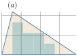
គណនាផ្ទៃក្រឡាត្រីកោណ \(\displaystyle ABC\) ។
រកផ្ទៃក្រឡាចតុកោណកែង \(\displaystyle ABCD\)
\(\displaystyle S_{ABCD} = b \times h = 4 \times 7 = 28\) ការ៉ូ
ផ្ទៃក្រឡាត្រីកោណស្មើតាក់កណ្ដាលនៃ \(\displaystyle S_{ABCD}\) :
\(\displaystyle S_{ABC} = \frac{S_{ABCD}}{2} = \frac{1}{2} \times b \times h = \frac{1}{2} \times 4 \times 7 = 14\) ការ៉ូ
គេបាន \(\displaystyle S_{ABC} = \frac{1}{2}bh\) ។
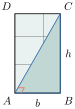
| រូបមន្ត ផ្ទៃក្រឡាត្រីកោណគឺ \(\displaystyle S = \frac{1}{2}bh\) ដែល \(\displaystyle b\) ជាបាត និង \(\displaystyle h\) ជាកម្ពស់ ។ |
គណនាផ្ទៃក្រឡាត្រីកោណតាមរូបខាងក្រោម ។
ផ្ទៃក្រឡាត្រីកោណ
\(\displaystyle S_{ABC} = \frac{1}{2} BC \times AH = \frac{1}{2} \times 24cm \times 17cm = 204cm^2\)
ដូចនេះ \(\displaystyle S = 204cm^2\) ។
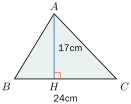
គណនាកម្ពស់ត្រីកោណមួយដោយ ស្គាល់ផ្ទៃក្រឡា \(\displaystyle S = 132dm^2\) និងបាត \(\displaystyle a = 34dm\) ។
តាមរូបមន្តគេបាន \(\displaystyle S = \frac{1}{2} a \times h\) នាំឱ្យ \(\displaystyle h = \frac{2S}{a}\)
\(\displaystyle h = \frac{2 \times 132dm^2}{34} = 7.76dm\)
ដូចនេះ \(\displaystyle h = 7.76dm\) ។
បំពេញតារាងខាងក្រោម :
| ត្រីកោណ | ជ្រុងទី 1 | ជ្រុងទី 2 | បាត | កម្ពស់ | ផ្ទៃក្រឡា | បរិមាត្រ |
| ទី1 | \(\displaystyle 13m\) | \(\displaystyle ......?\) | \(\displaystyle 10cm\) | \(\displaystyle 12cm\) | \(\displaystyle ......?\) | \(\displaystyle 36cm\) |
| ទី2 | \(\displaystyle 20m\) | \(\displaystyle 20cm\) | \(\displaystyle ......?\) | \(\displaystyle ......?\) | \(\displaystyle 192cm^2\) | \(\displaystyle 72cm\) |
3. ចំណោទ
ចំការកប្បាសមួយមានរាងចតុកោណកែង ដោយស្គាល់បរិមាត្រ \(\displaystyle 520m\) ហើយទទឹង ខ្លីជាងបណ្ដោយ \(\displaystyle 25m\) ។ រកផ្ទៃក្រឡាចំការកប្បាស ។
តាង \(\displaystyle x\) ជាទទឹងចំការ គេបានបណ្ដោយចំការគឺ \(\displaystyle x + 25\)
កន្លះបរិមាត្រចំការ \(\displaystyle \frac{520m}{2} = 260m\)
ទទឹងចំការ \(\displaystyle x = \frac{260m - 25}{2} = 117.5m\)
បណ្ដោយចំការ \(\displaystyle 117.5m + 25m = 142.5m\)
ផ្ទៃក្រឡាចំការ \(\displaystyle S = 117.5m \times 142.5m = 16743.75m^2\)
ដូចនេះ ផ្ទៃក្រឡាចំការកប្បាស \(\displaystyle S = 16743.75m^2\) ។
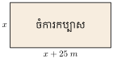
គណនាផ្ទៃក្រឡារូបខាងស្ដាំ
រកផ្ទៃក្រឡា \(\displaystyle S\)
\(\displaystyle S = S_1 + S_2\)
\(\displaystyle S_1 = 15cm \times 22cm = 330cm^2\)
\(\displaystyle S_2 = \frac{1}{2} \times 18cm \times 22cm = 198cm^2\)
\(\displaystyle S = S_1 + S_2 = 330cm^2 + 198cm^2 = 528cm^2\)
ដូចនេះផ្ទៃក្រឡា \(\displaystyle S = 528cm^2\) ។
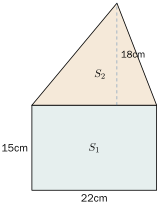
គណនាផ្ទៃក្រឡាតាមរូបខាងស្ដាំ ។
លំហាត់
- សង់ចតុកោណកែងមួយដោយស្គាល់រង្វាស់វិមាត្រទាំងពីរ \(\displaystyle 20cm\) និង \(\displaystyle 14cm\) ។ គណនាបរិមាត្រនិងផ្ទៃក្រឡាចតុកោណនោះ ។
- សង់ការេមួយដោយស្គាល់បរិមាត្រ \(\displaystyle 120mm\) ។ គណនាជ្រុងនិងផ្ទៃក្រឡាការេនោះ ។
- រកកម្ពស់ត្រីកោណមួយដោយស្គាល់ផ្ទៃក្រឡា \(\displaystyle 49cm^2\) និងបាតស្មើ \(\displaystyle 12cm\) ។
គណនាផ្ទៃក្រឡាការេតូចខាងក្នុងការេធំ(រូបខាងស្ដាំ) ។
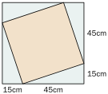
រកផ្ទៃក្រឡាផ្នែកផាត់ពណ៌នៃរូបខាងក្រោម ។ ( ឯកតាគិតជា \(\displaystyle m\) )
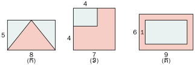
តាមមាត្រដ្ឋាន \(\displaystyle \frac{1}{200}\) ផែនទីសួនមួយរាងការេមានរង្វាស់ជ្រុង \(\displaystyle 7.9dm\) ។
- ក. គណនាផ្ទៃក្រឡាសួននោះនៅលើផែនទីគិតជា \(\displaystyle dm^2\) ។
- ខ. តើផ្ទៃក្រឡាសួនពិតនៅលើផ្ទៃដីមានប៉ុន្មានអា ?
ផ្ទៃការេប្រាំខាងក្រោមផ្គុំបានជារាងមួយ ។ រកផ្ទៃក្រឡារបស់រាងនោះ បើគេយកមួយការ៉ូស្មើនឹង \(\displaystyle 1ca\) ។
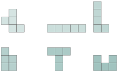
- ចំការចតុកោណកែងមួយមានបរិមាត្រ \(\displaystyle 500m\) ហើយទទឹងមានប្រវែង \(\displaystyle \frac{1}{4}\) នៃបណ្ដោយ ។ រកផ្ទៃក្រឡាចំការនោះ ។
ដីស្រែមួយកន្លែងមានរាងត្រីកោណ ដែលមានបាត \(\displaystyle 258m\) និងកម្ពស់មានប្រវែង \(\displaystyle \frac{2}{3}\) នៃបាត នៅក្នុង ស្រែនោះគេជីកស្រះរាងចតុកោណកែងមានបណ្ដោយ \(\displaystyle 13m\) និងទទឹងស្មើ \(\displaystyle \frac{1}{3}\) នៃកម្ពស់ត្រីកោណ ។
- ក. រកផ្ទៃក្រឡាស្រះ ។
- ខ. រកផ្ទៃក្រឡាដីស្រែដែលនៅសល់ពីជីកស្រះ ។
- គ. រកផលស្រូវទាំងអស់ បើក្នុងមួយហិចតាទទួលបាន 3 តោន ។
ខ្លឹមសារ៖ សៀវភៅពុម្ពគណិតវិទ្យាថ្នាក់ទី៧ របស់ក្រសួងអប់រំ យុវជន និងកីឡា · វាយអត្ថបទ គូររូបភាពឡើងវិញ និងរៀបចំលើអនឡាញដោយលោកគ្រូ សាន សុខលី សម្រាប់ការសិក្សាដោយឥតគិតថ្លៃ និងមិនរកប្រាក់ចំណេញ។ មិនមែនជាការបោះពុម្ពផ្លូវការរបស់ក្រសួងទេ។